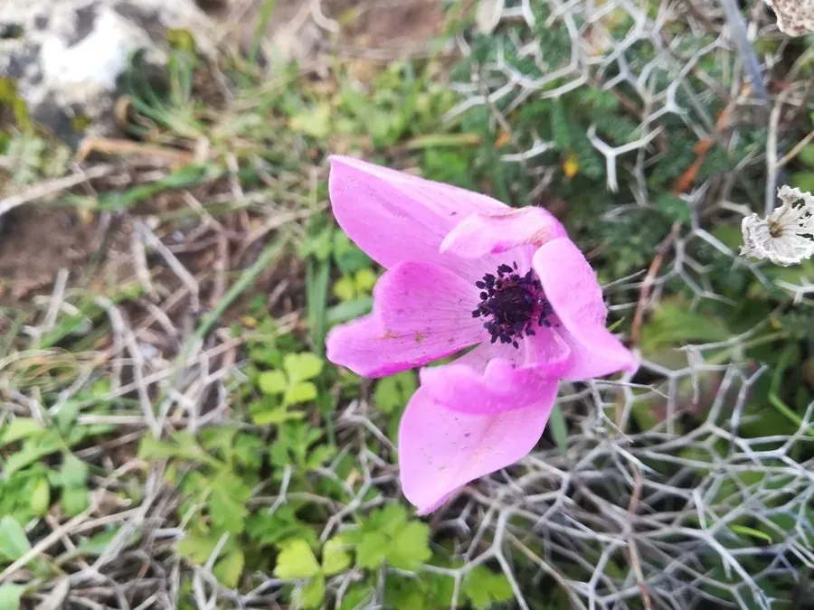

花卉与草本 · 植物界
银莲花 Anemone coronaria

毛茛科多年生草本，花形似罂粟、色彩浓烈，中心密生黑色雄蕊，是春季花坛与切花的特色花卉，原产地中海沿岸。
- 分类
- 门被子植物门纲木兰纲目毛茛目科毛茛科属银莲花属
- 栖息环境
- 地中海沿岸的向阳坡地，喜凉爽、阳光充足
- 地理分布
- 原产地中海沿岸，现世界各地栽培，中国各地花市常见
- 保护级别
- 暂无评估
物种志
银莲花为毛茛科银莲花属多年生草本，株高 20–40 厘米，地下具块茎。叶片羽状分裂，裂片细裂。花单生花葶顶端，花径 5–8 厘米，萼片呈花瓣状，有红、蓝、紫、粉、白等色，中央密生黑紫色雄蕊，花期 3–5 月；果实为瘦果。
银莲花原产地中海沿岸，喜凉爽、阳光充足和排水良好的环境，夏季块茎休眠，秋凉后萌芽，翌年春季开花。它花形舒展、色彩浓烈，中心黑紫色的雄蕊群与鲜艳的萼片形成强烈对比，是春季花坛和切花的特色材料。栽培以块茎种植为主，土壤需疏松透气，生长期保持湿润但不积水；与毛茛科许多植物一样，全株有一定毒性，不可食用。
形态与习性
- 株高20–40 厘米，地下具块茎
- 花期3–5 月
- 果期花后结瘦果
- 光照喜充足阳光
- 水分喜湿润，忌积水
- 土壤疏松透气、排水良好的壤土
- 繁殖以块茎种植为主
- 主要用途花坛、切花、盆栽
趣味知识
- 银莲花的花瓣其实是萼片，中央密生黑紫色雄蕊。
- 它原产地中海沿岸，喜凉爽，夏季块茎休眠。
- 银莲花与花毛茛同为毛茛科，全株有毒性，不可食用。
- 花色浓烈、花形舒展，是春季切花的特色材料。